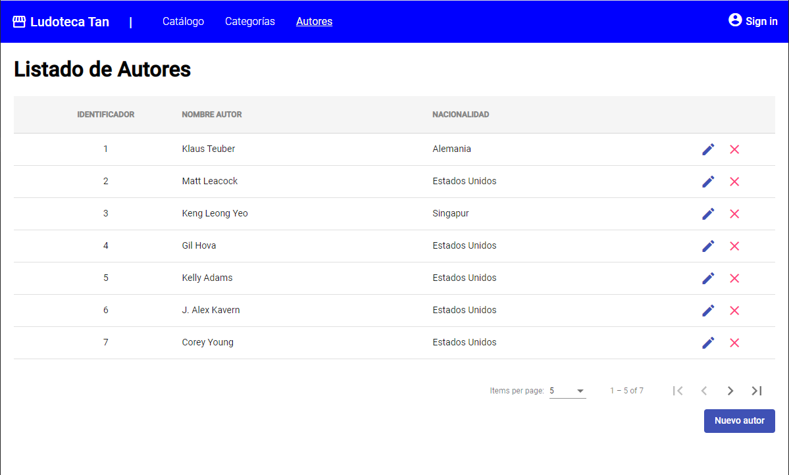

Desarrollo de un listado paginado
Ya tienes tu primer listado desarrollado, tanto en front como en back. ¿Ha sido sencillo, verdad?.
Ahora vamos a implementar un listado un poco más complejo, este tiene datos paginados en servidor, esto quiere decir que no nos sirve un array de datos como en el anterior ejemplo. Para que un listado paginado en servidor funcione, el cliente debe enviar en cada petición que página está solicitando y cual es el tamaño de la página, para que el servidor devuelva solamente un subconjunto de datos, en lugar de devolver el listado completo.
Como ya conocemos como se debe desarrollar, en este ejemplo vamos a ir más rápidos y nos vamos a centrar únicamente en las novedades.
Desarrollo Angular
Crear modulo y componentes
Vamos a desarrollar el listado de Autores así que, debemos crear los componentes:
ng generate module author
ng generate component author/author-list
ng generate component author/author-edit
ng generate service author/author
Este módulo lo vamos a añadir a la aplicación para que se cargue en el arranque. Abrimos el fichero app.module.ts y añadimos el módulo:
import { NgModule } from '@angular/core';
import { BrowserModule } from '@angular/platform-browser';
import { AppRoutingModule } from './app-routing.module';
import { AppComponent } from './app.component';
import { BrowserAnimationsModule } from '@angular/platform-browser/animations';
import { CoreModule } from './core/core.module';
import { CategoryModule } from './category/category.module';
import { AuthorModule } from './author/author.module';
@NgModule({
declarations: [
AppComponent
],
imports: [
BrowserModule,
AppRoutingModule,
CoreModule,
CategoryModule,
AuthorModule,
BrowserAnimationsModule
],
providers: [],
bootstrap: [AppComponent]
})
export class AppModule { }
Crear el modelo
Creamos el modelo en author/model/Author.ts con las propiedades necesarias para trabajar con la información de un autor:
export class Author {
id: number;
name: string;
nationality: string;
}
Añadir el punto de entrada
Añadimos la ruta al menú para que podamos acceder a la pantalla:
import { NgModule } from '@angular/core';
import { Routes, RouterModule } from '@angular/router';
import { CategoryListComponent } from './category/category-list/category-list.component';
import { AuthorListComponent } from './author/author-list/author-list.component';
const routes: Routes = [
{ path: 'categories', component: CategoriesComponent },
{ path: 'authors', component: AuthorListComponent },
];
@NgModule({
imports: [RouterModule.forRoot(routes)],
exports: [RouterModule]
})
export class AppRoutingModule { }
Implementar servicio
Y realizamos las diferentes implementaciones. Empezaremos por el servicio. En este caso, hay un cambio sustancial con el anterior ejemplo. Al tratarse de un listado paginado, la operación getAuthors necesita información extra acerca de que página de datos debe mostrar, además de que el resultado ya no será un listado sino una página.
Por defecto el esquema de datos de Spring para la paginación es como el siguiente:
{
"content": [ ... <listado con los resultados paginados> ... ],
"pageable": {
"pageNumber": <número de página empezando por 0>,
"pageSize": <tamaño de página>,
"sort": [
{
"property": <nombre de la propiedad a ordenar>,
"direction": <dirección de la ordenación ASC / DESC>
}
]
},
"totalElements": <numero total de elementos en la tabla>
}
Así que necesitamos poder enviar y recuperar esa información desde Angular, nos hace falta crear esos objetos. Los objetos de paginación al ser comunes a toda la aplicación, vamos a crearlos en core/model/page, mientras que la paginación de AuthorPage.ts la crearé en su propio model dentro de author/model.
export class SortPage {
property: String;
direction: String;
}
import { SortPage } from './SortPage';
export class Pageable {
pageNumber: number;
pageSize: number;
sort: SortPage[];
}
import { Pageable } from "src/app/core/model/page/Pageable";
import { Author } from "./Author";
export class AuthorPage {
content: Author[];
pageable: Pageable;
totalElements: number;
}
Con estos objetos creados ya podemos implementar el servicio y sus datos mockeados.
import { AuthorPage } from "./AuthorPage";
export const AUTHOR_DATA: AuthorPage = {
content: [
{ id: 1, name: 'Klaus Teuber', nationality: 'Alemania' },
{ id: 2, name: 'Matt Leacock', nationality: 'Estados Unidos' },
{ id: 3, name: 'Keng Leong Yeo', nationality: 'Singapur' },
{ id: 4, name: 'Gil Hova', nationality: 'Estados Unidos'},
{ id: 5, name: 'Kelly Adams', nationality: 'Estados Unidos' },
{ id: 6, name: 'J. Alex Kavern', nationality: 'Estados Unidos' },
{ id: 7, name: 'Corey Young', nationality: 'Estados Unidos' },
],
pageable : {
pageSize: 5,
pageNumber: 0,
sort: [
{property: "id", direction: "ASC"}
]
},
totalElements: 7
}
import { Injectable } from '@angular/core';
import { Observable, of } from 'rxjs';
import { Pageable } from '../core/model/page/Pageable';
import { Author } from './model/Author';
import { AuthorPage } from './model/AuthorPage';
import { AUTHOR_DATA } from './model/mock-authors';
@Injectable({
providedIn: 'root'
})
export class AuthorService {
constructor() { }
getAuthors(pageable: Pageable): Observable<AuthorPage> {
return of(AUTHOR_DATA);
}
saveAuthor(author: Author): Observable<void> {
return of(null);
}
deleteAuthor(idAuthor : number): Observable<void> {
return of(null);
}
}
Implementar listado
Ya tenemos el servicio con los datos, ahora vamos a por el listado paginado.
<div class="container">
<h1>Listado de Autores</h1>
<mat-table [dataSource]="dataSource">
<ng-container matColumnDef="id">
<mat-header-cell *matHeaderCellDef> Identificador </mat-header-cell>
<mat-cell *matCellDef="let element"> {{element.id}} </mat-cell>
</ng-container>
<ng-container matColumnDef="name">
<mat-header-cell *matHeaderCellDef> Nombre autor </mat-header-cell>
<mat-cell *matCellDef="let element"> {{element.name}} </mat-cell>
</ng-container>
<ng-container matColumnDef="nationality">
<mat-header-cell *matHeaderCellDef> Nacionalidad </mat-header-cell>
<mat-cell *matCellDef="let element"> {{element.nationality}} </mat-cell>
</ng-container>
<ng-container matColumnDef="action">
<mat-header-cell *matHeaderCellDef></mat-header-cell>
<mat-cell *matCellDef="let element">
<button mat-icon-button color="primary">
<mat-icon (click)="editAuthor(element)">edit</mat-icon>
</button>
<button mat-icon-button color="accent">
<mat-icon (click)="deleteAuthor(element)">clear</mat-icon>
</button>
</mat-cell>
</ng-container>
<mat-header-row *matHeaderRowDef="displayedColumns; sticky: true"></mat-header-row>
<mat-row *matRowDef="let row; columns: displayedColumns;"></mat-row>
</mat-table>
<mat-paginator (page)="loadPage($event)" [pageSizeOptions]="[5, 10, 20]" [pageIndex]="pageNumber" [pageSize]="pageSize" [length]="totalElements" showFirstLastButtons></mat-paginator>
<div class="buttons">
<button mat-flat-button color="primary" (click)="createAuthor()">Nuevo autor</button>
</div>
</div>
.container {
margin: 20px;
mat-table {
margin-top: 10px;
margin-bottom: 20px;
.mat-header-row {
background-color:#f5f5f5;
.mat-header-cell {
text-transform: uppercase;
font-weight: bold;
color: #838383;
}
}
.mat-column-id {
flex: 0 0 20%;
justify-content: center;
}
.mat-column-action {
flex: 0 0 10%;
justify-content: center;
}
}
.buttons {
text-align: right;
}
}
import { Component, OnInit } from '@angular/core';
import { MatDialog } from '@angular/material/dialog';
import { PageEvent } from '@angular/material/paginator';
import { MatTableDataSource } from '@angular/material/table';
import { DialogConfirmationComponent } from 'src/app/core/dialog-confirmation/dialog-confirmation.component';
import { Pageable } from 'src/app/core/model/page/Pageable';
import { AuthorEditComponent } from '../author-edit/author-edit.component';
import { AuthorService } from '../author.service';
import { Author } from '../model/Author';
@Component({
selector: 'app-author-list',
templateUrl: './author-list.component.html',
styleUrls: ['./author-list.component.scss']
})
export class AuthorListComponent implements OnInit {
pageNumber: number = 0;
pageSize: number = 5;
totalElements: number = 0;
dataSource = new MatTableDataSource<Author>();
displayedColumns: string[] = ['id', 'name', 'nationality', 'action'];
constructor(
private authorService: AuthorService,
public dialog: MatDialog,
) { }
ngOnInit(): void {
this.loadPage();
}
loadPage(event?: PageEvent) {
let pageable : Pageable = {
pageNumber: this.pageNumber,
pageSize: this.pageSize,
sort: [{
property: 'id',
direction: 'ASC'
}]
}
if (event != null) {
pageable.pageSize = event.pageSize
pageable.pageNumber = event.pageIndex;
}
this.authorService.getAuthors(pageable).subscribe(data => {
this.dataSource.data = data.content;
this.pageNumber = data.pageable.pageNumber;
this.pageSize = data.pageable.pageSize;
this.totalElements = data.totalElements;
});
}
createAuthor() {
const dialogRef = this.dialog.open(AuthorEditComponent, {
data: {}
});
dialogRef.afterClosed().subscribe(result => {
this.ngOnInit();
});
}
editAuthor(author: Author) {
const dialogRef = this.dialog.open(AuthorEditComponent, {
data: { author: author }
});
dialogRef.afterClosed().subscribe(result => {
this.ngOnInit();
});
}
deleteAuthor(author: Author) {
const dialogRef = this.dialog.open(DialogConfirmationComponent, {
data: { title: "Eliminar autor", description: "Atención si borra el autor se perderán sus datos.<br> ¿Desea eliminar el autor?" }
});
dialogRef.afterClosed().subscribe(result => {
if (result) {
this.authorService.deleteAuthor(author.id).subscribe(result => {
this.ngOnInit();
});
}
});
}
}
Fíjate como hemos añadido la paginación.
- Al HTML le hemos añadido un componente nuevo
mat-paginator, lo que nos va a obligar a añadirlo al módulo también como dependencia. Ese componente le hemos definido un métodopageque se ejecuta cada vez que la página cambia, y unas propiedades con las que calculará la página, el tamaño y el número total de páginas. - Al Typescript le hemos tenido que añadir esas variables y hemos creado un método para cargar datos que lo que hace es construir un objeto
pageablecon los valores actuales del componente paginador y lanza la petición con esos datos en el body. Obviamente al ser un mock no funcionará el cambio de página y demás.
Como siempre, añadimos las dependencias al módulo, vamos a intentar añadir todas las que vamos a necesitar a futuro.
import { NgModule } from '@angular/core';
import { CommonModule } from '@angular/common';
import { AuthorListComponent } from './author-list/author-list.component';
import { AuthorEditComponent } from './author-edit/author-edit.component';
import { MatTableModule } from '@angular/material/table';
import { FormsModule, ReactiveFormsModule } from '@angular/forms';
import { MatButtonModule } from '@angular/material/button';
import { MatDialogModule, MAT_DIALOG_DATA } from '@angular/material/dialog';
import { MatFormFieldModule } from '@angular/material/form-field';
import { MatIconModule } from '@angular/material/icon';
import { MatInputModule } from '@angular/material/input';
import { MatPaginatorModule } from '@angular/material/paginator';
@NgModule({
declarations: [
AuthorListComponent,
AuthorEditComponent
],
imports: [
CommonModule,
MatTableModule,
MatIconModule,
MatButtonModule,
MatDialogModule,
MatFormFieldModule,
MatInputModule,
FormsModule,
ReactiveFormsModule,
MatPaginatorModule,
],
providers: [
{
provide: MAT_DIALOG_DATA,
useValue: {},
},
]
})
export class AuthorModule { }
Debería verse algo similar a esto:

Implementar dialogo edición
El último paso, es definir la pantalla de dialogo que realizará el alta y modificado de los datos de un Autor.
<div class="container">
<h1 *ngIf="author.id == null">Crear autor</h1>
<h1 *ngIf="author.id != null">Modificar autor</h1>
<form>
<mat-form-field>
<mat-label>Identificador</mat-label>
<input type="number" matInput placeholder="Identificador" [(ngModel)]="author.id" name="id" disabled>
</mat-form-field>
<mat-form-field>
<mat-label>Nombre</mat-label>
<input type="text" matInput placeholder="Nombre del autor" [(ngModel)]="author.name" name="name" required>
<mat-error>El nombre no puede estar vacío</mat-error>
</mat-form-field>
<mat-form-field>
<mat-label>Nacionalidad</mat-label>
<input type="text" matInput placeholder="Nacionalidad del autor" [(ngModel)]="author.nationality" name="nationality" required>
<mat-error>La nacionalidad no puede estar vacía</mat-error>
</mat-form-field>
</form>
<div class="buttons">
<button mat-stroked-button (click)="onClose()">Cerrar</button>
<button mat-flat-button color="primary" (click)="onSave()">Guardar</button>
</div>
</div>
.container {
min-width: 350px;
max-width: 500px;
width: 100%;
form {
display: flex;
flex-direction: column;
margin-bottom:20px;
}
.buttons {
text-align: right;
button {
margin-left: 10px;
}
}
}
import { Component, Inject, OnInit } from '@angular/core';
import { MatDialogRef, MAT_DIALOG_DATA } from '@angular/material/dialog';
import { AuthorService } from '../author.service';
import { Author } from '../model/Author';
@Component({
selector: 'app-author-edit',
templateUrl: './author-edit.component.html',
styleUrls: ['./author-edit.component.scss']
})
export class AuthorEditComponent implements OnInit {
author : Author;
constructor(
public dialogRef: MatDialogRef<AuthorEditComponent>,
@Inject(MAT_DIALOG_DATA) public data: any,
private authorService: AuthorService
) { }
ngOnInit(): void {
if (this.data.author != null) {
this.author = Object.assign({}, this.data.author);
}
else {
this.author = new Author();
}
}
onSave() {
this.authorService.saveAuthor(this.author).subscribe(result => {
this.dialogRef.close();
});
}
onClose() {
this.dialogRef.close();
}
}
Que debería quedar algo así:

Desarrollo Springboot
Modelos
Lo primero que vamos a hacer es crear los modelos para trabajar con BBDD y con peticiones hacia el front. Además, también tenemos que añadir datos al script de inicialización de BBDD.
DROP TABLE IF EXISTS CATEGORY;
CREATE TABLE CATEGORY (
id BIGINT IDENTITY NOT NULL PRIMARY KEY,
name VARCHAR(250) NOT NULL
);
DROP TABLE IF EXISTS AUTHOR;
CREATE TABLE AUTHOR (
id BIGINT IDENTITY NOT NULL PRIMARY KEY,
name VARCHAR(400) NOT NULL,
nationality VARCHAR(250) NOT NULL
);
INSERT INTO CATEGORY(id, name) VALUES (1, 'Eurogames');
INSERT INTO CATEGORY(id, name) VALUES (2, 'Ameritrash');
INSERT INTO CATEGORY(id, name) VALUES (3, 'Familiar');
INSERT INTO AUTHOR(id, name, nationality) VALUES (1, 'Alan R. Moon', 'US');
INSERT INTO AUTHOR(id, name, nationality) VALUES (2, 'Vital Lacerda', 'PT');
INSERT INTO AUTHOR(id, name, nationality) VALUES (3, 'Simone Luciani', 'IT');
INSERT INTO AUTHOR(id, name, nationality) VALUES (4, 'Perepau Llistosella', 'ES');
INSERT INTO AUTHOR(id, name, nationality) VALUES (5, 'Michael Kiesling', 'DE');
INSERT INTO AUTHOR(id, name, nationality) VALUES (6, 'Phil Walker-Harding', 'US');
package com.capgemini.ccsw.tutorial.author.model;
import javax.persistence.Column;
import javax.persistence.Entity;
import javax.persistence.GeneratedValue;
import javax.persistence.GenerationType;
import javax.persistence.Id;
import javax.persistence.Table;
/**
* @author ccsw
*/
@Entity
@Table(name = "Author")
public class Author {
@Id
@GeneratedValue(strategy = GenerationType.IDENTITY)
@Column(name = "id", nullable = false)
private Long id;
@Column(name = "name", nullable = false)
private String name;
@Column(name = "nationality")
private String nationality;
/**
* @return id
*/
public Long getId() {
return this.id;
}
/**
* @param id new value of {@link #getid}.
*/
public void setId(Long id) {
this.id = id;
}
/**
* @return name
*/
public String getName() {
return this.name;
}
/**
* @param name new value of {@link #getname}.
*/
public void setName(String name) {
this.name = name;
}
/**
* @return nationality
*/
public String getNationality() {
return this.nationality;
}
/**
* @param nationality new value of {@link #getnationality}.
*/
public void setNationality(String nationality) {
this.nationality = nationality;
}
}
package com.capgemini.ccsw.tutorial.author.model;
/**
* @author ccsw
*/
public class AuthorDto {
private Long id;
private String name;
private String nationality;
/**
* @return id
*/
public Long getId() {
return this.id;
}
/**
* @param id new value of {@link #getid}.
*/
public void setId(Long id) {
this.id = id;
}
/**
* @return name
*/
public String getName() {
return this.name;
}
/**
* @param name new value of {@link #getname}.
*/
public void setName(String name) {
this.name = name;
}
/**
* @return nationality
*/
public String getNationality() {
return this.nationality;
}
/**
* @param nationality new value of {@link #getnationality}.
*/
public void setNationality(String nationality) {
this.nationality = nationality;
}
}
TDD - Pruebas
Para desarrollar todas las operaciones, empezaremos primero diseñando las pruebas y luego implementando el código necesario que haga funcionar correctamente esas pruebas. Para ir más rápido vamos a poner todas las pruebas de golpe, pero realmente se deberían crear una a una e ir implementando el código necesario para esa prueba. Para evitar tantas iteraciones en el tutorial las haremos todas de golpe.
Vamos a pararnos a pensar un poco que necesitamos en la pantalla. Ahora mismo nos sirve con:
- Una consulta paginada, que reciba datos de la página a consultar y devuelva los datos paginados
- Una operación de guardado y modificación
- Una operación de borrado
Para la primera prueba necesitaremos que hemos descrito (consulta paginada) se necesita un objeto que contenga los datos de la página a consultar. Así que crearemos una clase AuthorSearchDto para utilizarlo como 'paginador'.
Paginación en Springframework
Cuando utilicemos paginación en Springframework, debemos recordar que ya vienen implementados algunos objetos que podemos utilizar y que nos facilitan la vida. Es el caso de Pageable y Page.
- El objeto
Pageableno es más que una interface que le permite a Spring JPA saber que página se quiere buscar, cual es el tamaño de página y cuales son las propiedades de ordenación que se debe lanzar en la consulta. - El objeto
PageRequestes una utilidad que permite crear objetos de tipoPageablede forma sencilla. Se utiliza mucho para codificación de test. - El objeto
Pageno es más que un contenedor que engloba la información básica de la página que se está consultando (número de página, tamaño de página, número total de resultados) y el conjunto de datos de la BBDD que contiene esa página una vez han sido buscados y ordenados.
También crearemos una clase AuthorController dentro del package de com.capgemini.ccsw.tutorial.author con la implementación de los métodos vacíos, para que no falle la compilación.
¡Vamos a implementar test!
package com.capgemini.ccsw.tutorial.author.model;
import org.springframework.data.domain.Pageable;
/**
* @author ccsw
*/
public class AuthorSearchDto {
private Pageable pageable;
/**
* @return pageable
*/
public Pageable getPageable() {
return this.pageable;
}
/**
* @param pageable new value of {@link #getPageable}.
*/
public void setPageable(Pageable pageable) {
this.pageable = pageable;
}
}
package com.capgemini.ccsw.tutorial.author;
import org.springframework.data.domain.Page;
import com.capgemini.ccsw.tutorial.author.model.AuthorDto;
import com.capgemini.ccsw.tutorial.author.model.AuthorSearchDto;
/**
* @author ccsw
*/
public class AuthorController {
/**
* Método para recuperar un listado paginado de {@link com.capgemini.ccsw.tutorial.author.model.Author}
* @param dto
* @return
*/
public Page<AuthorDto> findPage(AuthorSearchDto dto) {
return null;
}
/**
* Método para crear o actualizar un {@link com.capgemini.ccsw.tutorial.author.model.Author}
* @param id
* @param data datos de la entidad
*/
public void save(Long id, AuthorDto data) {
}
/**
* Método para crear o actualizar un {@link com.capgemini.ccsw.tutorial.author.model.Author}
* @param id PK de la entidad
*/
public void delete(Long id) {
}
}
package com.capgemini.ccsw.tutorial.author;
import static org.junit.jupiter.api.Assertions.assertEquals;
import static org.junit.jupiter.api.Assertions.assertNotNull;
import static org.junit.jupiter.api.Assertions.assertThrows;
import org.junit.jupiter.api.Test;
import org.springframework.beans.factory.annotation.Autowired;
import org.springframework.boot.test.context.SpringBootTest;
import org.springframework.data.domain.Page;
import org.springframework.data.domain.PageRequest;
import org.springframework.transaction.annotation.Transactional;
import com.capgemini.ccsw.tutorial.author.model.AuthorDto;
import com.capgemini.ccsw.tutorial.author.model.AuthorSearchDto;
import com.capgemini.ccsw.tutorial.category.model.CategoryDto;
@SpringBootTest
@Transactional
public class AuthorTest {
private static final int TOTAL_AUTORS = 6;
@Autowired
private AuthorController authorController;
@Test
public void findFirstPageWithFiveSizeShouldReturnFirstFiveResults() {
int pageSize = 5;
assertNotNull(authorController);
AuthorSearchDto dto = new AuthorSearchDto();
dto.setPageable(PageRequest.of(0, pageSize));
Page<AuthorDto> resultPage = authorController.findPage(dto);
assertNotNull(resultPage);
assertEquals(TOTAL_AUTORS, resultPage.getTotalElements());
assertEquals(pageSize, resultPage.getContent().size());
}
@Test
public void findSecondPageWithFiveSizeShouldReturnLastTwoResults() {
int pageSize = 5;
int elementsCount = TOTAL_AUTORS - pageSize;
assertNotNull(authorController);
AuthorSearchDto searchDto = new AuthorSearchDto();
searchDto.setPageable(PageRequest.of(1, pageSize));
Page<AuthorDto> resultPage = authorController.findPage(searchDto);
assertNotNull(resultPage);
assertEquals(TOTAL_AUTORS, resultPage.getTotalElements());
assertEquals(elementsCount, resultPage.getContent().size());
}
@Test
public void saveWithoutIdShouldCreateNewAuthor() {
assertNotNull(authorController);
String newAuthorName = "Nuevo Autor";
String newNationality = "Nueva Nacionalidad";
long newAuthorId = TOTAL_AUTORS + 1;
long newAuthorSize = TOTAL_AUTORS + 1;
AuthorDto dto = new AuthorDto();
dto.setName(newAuthorName);
dto.setNationality(newNationality);
authorController.save(null, dto);
AuthorSearchDto searchDto = new AuthorSearchDto();
searchDto.setPageable(PageRequest.of(0, (int) newAuthorSize));
Page<AuthorDto> resultPage = authorController.findPage(searchDto);
assertNotNull(resultPage);
assertEquals(newAuthorSize, resultPage.getTotalElements());
AuthorDto author = resultPage.getContent().stream().filter(item -> item.getId().equals(newAuthorId)).findFirst().orElse(null);
assertNotNull(author);
assertEquals(newAuthorName, author.getName());
}
@Test
public void modifyWithExistIdShouldModifyCategory() {
assertNotNull(authorController);
String newAuthorName = "Nuevo Autor";
long authorId = 3;
CategoryDto dto = new CategoryDto();
dto.setName(newAuthorName);
authorController.save(authorId, dto);
AuthorSearchDto searchDto = new AuthorSearchDto();
searchDto.setPageable(PageRequest.of(0, (int) authorId));
Page<AuthorDto> resultPage = authorController.findPage(searchDto);
assertNotNull(resultPage);
assertEquals(TOTAL_AUTORS, resultPage.getTotalElements());
AuthorDto author = resultPage.getContent().stream().filter(item -> item.getId().equals(authorId)).findFirst().orElse(null);
assertNotNull(author);
assertEquals(newAuthorName, author.getName());
}
@Test
public void modifyWithNotExistIdShouldThrowException() {
assertNotNull(authorController);
String newAuthorName = "Nuevo Autor";
long authorId = TOTAL_AUTORS + 1;
CategoryDto dto = new CategoryDto();
dto.setName(newAuthorName);
assertThrows(Exception.class, () -> authorController.save(authorId, dto));
}
@Test
public void deleteWithExistsIdShouldDeleteCategory() {
assertNotNull(authorController);
long newAuthorsSize = TOTAL_AUTORS - 1;
long deleteAuthorId = 6;
authorController.delete(deleteAuthorId);
AuthorSearchDto searchDto = new AuthorSearchDto();
searchDto.setPageable(PageRequest.of(0, TOTAL_AUTORS));
Page<AuthorDto> resultPage = authorController.findPage(searchDto);
assertNotNull(resultPage);
assertEquals(newAuthorsSize, resultPage.getTotalElements());
}
@Test
public void deleteWithNotExistsIdShouldThrowException() {
assertNotNull(authorController);
long deleteAuthorId = TOTAL_AUTORS + 1;
assertThrows(Exception.class, () -> authorController.delete(deleteAuthorId));
}
}
Cuidado con las clases de Test
Recuerda que el código de aplicación debe ir en src/main/java, mientras que las clases de test deben ir en src/test/java para que no se mezclen unas con otras y se empaquete todo en el artefacto final. En este caso AuthorTest.java va en el directorio de test src/test/java.
Si ejecutamos los test, el resultado será 7 maravillosos test que fallan su ejecución. Es normal, puesto que no hemos implementado nada de código de aplicación para corresponder esos test.
Controller
Si recuerdas, esta capa de Controller es la que tiene los endpoints de entrada a la aplicación. Nosotros ya tenemos definidas 3 operaciones, que hemos diseñado directamente desde los tests. Ahora vamos a implementar esos métodos con el código necesario para que los test funcionen correctamente, y teniendo en mente que debemos apoyarnos en las capas inferiores Service y Repository para repartir lógica de negocio y acceso a datos.
package com.capgemini.ccsw.tutorial.author;
import org.springframework.beans.factory.annotation.Autowired;
import org.springframework.data.domain.Page;
import org.springframework.web.bind.annotation.CrossOrigin;
import org.springframework.web.bind.annotation.PathVariable;
import org.springframework.web.bind.annotation.RequestBody;
import org.springframework.web.bind.annotation.RequestMapping;
import org.springframework.web.bind.annotation.RequestMethod;
import org.springframework.web.bind.annotation.RestController;
import com.capgemini.ccsw.tutorial.author.model.AuthorDto;
import com.capgemini.ccsw.tutorial.author.model.AuthorSearchDto;
import com.capgemini.ccsw.tutorial.config.mapper.BeanMapper;
/**
* @author ccsw
*/
@RequestMapping(value = "/author")
@RestController
@CrossOrigin(origins = "*")
public class AuthorController {
@Autowired
AuthorService authorService;
@Autowired
BeanMapper beanMapper;
/**
* Método para recuperar un listado paginado de {@link com.capgemini.ccsw.tutorial.author.model.Author}
* @param dto
* @return
*/
@RequestMapping(path = "", method = RequestMethod.POST)
public Page<AuthorDto> findPage(@RequestBody AuthorSearchDto dto) {
return this.beanMapper.mapPage(this.authorService.findPage(dto), AuthorDto.class);
}
/**
* Método para crear o actualizar un {@link com.capgemini.ccsw.tutorial.author.model.Author}
* @param id
* @param data datos de la entidad
*/
@RequestMapping(path = { "", "/{id}" }, method = RequestMethod.PUT)
public void save(@PathVariable(name = "id", required = false) Long id, @RequestBody AuthorDto data) {
this.authorService.save(id, data);
}
/**
* Método para crear o actualizar un {@link com.capgemini.ccsw.tutorial.author.model.Author}
* @param id PK de la entidad
*/
@RequestMapping(path = "/{id}", method = RequestMethod.DELETE)
public void delete(@PathVariable("id") Long id) {
this.authorService.delete(id);
}
}
package com.capgemini.ccsw.tutorial.author;
import org.springframework.data.domain.Page;
import com.capgemini.ccsw.tutorial.author.model.Author;
import com.capgemini.ccsw.tutorial.author.model.AuthorDto;
import com.capgemini.ccsw.tutorial.author.model.AuthorSearchDto;
/**
* @author ccsw
*/
public interface AuthorService {
/**
* Método para recuperar un listado paginado de {@link com.capgemini.ccsw.tutorial.author.model.Author}
* @param dto
* @return
*/
Page<Author> findPage(AuthorSearchDto dto);
/**
* Método para crear o actualizar un {@link com.capgemini.ccsw.tutorial.author.model.Author}
* @param id
* @param data
*/
void save(Long id, AuthorDto data);
/**
* Método para crear o actualizar un {@link com.capgemini.ccsw.tutorial.author.model.Author}
* @param id
*/
void delete(Long id);
}
Si te fijas, hemos trasladado toda la lógica a llamadas al AuthorService que hemos inyectado, y para que no falle la compilación hemos creado una interface con los métodos necesarios.
En la clase AuthorController es donde se hacen las conversiones de cara al cliente, pasaremos de un Page<Author> (modelo entidad) a un Page<AuthorDto> (modelo DTO) con la ayuda del beanMapper. Recuerda que al cliente no le deben llegar modelos entidades sino DTOs.
Además, el método de carga findPage ya no es un método de tipo GET, ahora es de tipo POST porque le tenemos que enviar los datos de la paginación para que Spring JPA pueda hacer su magia.
Ahora debemos implementar la siguiente capa.
Service
La siguiente capa que vamos a implementar es justamente la capa que contiene toda la lógica de negocio, hace uso del Repository para acceder a los datos, y recibe llamadas generalmente de los Controller.
package com.capgemini.ccsw.tutorial.author;
import javax.transaction.Transactional;
import org.springframework.beans.BeanUtils;
import org.springframework.beans.factory.annotation.Autowired;
import org.springframework.data.domain.Page;
import org.springframework.stereotype.Service;
import com.capgemini.ccsw.tutorial.author.model.Author;
import com.capgemini.ccsw.tutorial.author.model.AuthorDto;
import com.capgemini.ccsw.tutorial.author.model.AuthorSearchDto;
/**
* @author ccsw
*/
@Service
@Transactional
public class AuthorServiceImpl implements AuthorService {
@Autowired
AuthorRepository authorRepository;
/**
* {@inheritDoc}
*/
@Override
public Page<Author> findPage(AuthorSearchDto dto) {
return this.authorRepository.findAll(dto.getPageable());
}
/**
* {@inheritDoc}
*/
@Override
public void save(Long id, AuthorDto data) {
Author author = null;
if (id != null)
author = this.authorRepository.findById(id).orElse(null);
else
author = new Author();
BeanUtils.copyProperties(data, author, "id");
this.authorRepository.save(author);
}
/**
* {@inheritDoc}
*/
@Override
public void delete(Long id) {
this.authorRepository.deleteById(id);
}
}
package com.capgemini.ccsw.tutorial.author;
import org.springframework.data.domain.Page;
import org.springframework.data.domain.Pageable;
import org.springframework.data.repository.CrudRepository;
import com.capgemini.ccsw.tutorial.author.model.Author;
/**
* @author ccsw
*/
public interface AuthorRepository extends CrudRepository<Author, Long> {
/**
* Método para recuperar un listado paginado de {@link com.capgemini.ccsw.tutorial.author.model.Author}
* @param page
* @return
*/
Page<Author> findAll(Pageable pageable);
}
De nuevo pasa lo mismo que con la capa anterior, aquí delegamos muchas operaciones de consulta y guardado de datos en AuthorRepository. Hemos tenido que crearlo como interface para que no falle la compilación. Recuerda que cuando creamos un Repository es de gran ayuda hacerlo extender de CrudRepository<T, ID> ya que tiene muchos métodos implementados de base que nos pueden servir, como el delete o el save.
Fíjate también que cuando queremos copiar más de un dato de una clase a otra, tenemos una utilidad llamada BeanUtils que nos permite realizar esa copia (siempre que las propiedades de ambas clases se llamen igual). Además, en nuestro ejemplo hemos ignorado el 'id' para que no nos copie un null a la clase destino.
Repository
Y llegamos a la última capa, la que está más cerca de los datos finales. Tenemos la siguiente interface:
package com.capgemini.ccsw.tutorial.author;
import org.springframework.data.domain.Page;
import org.springframework.data.domain.Pageable;
import org.springframework.data.repository.CrudRepository;
import com.capgemini.ccsw.tutorial.author.model.Author;
/**
* @author ccsw
*/
public interface AuthorRepository extends CrudRepository<Author, Long> {
/**
* Método para recuperar un listado paginado de {@link com.capgemini.ccsw.tutorial.author.model.Author}
* @param page
* @return
*/
Page<Author> findAll(Pageable pageable);
}
Si te fijas, este Repository ya no está vacío como el anterior, no nos sirve con las operaciones básicas del CrudRepository en este caso hemos tenido que añadir un método nuevo al que pasandole un objeto de tipo Pageable nos devuelva una Page.
Pues bien, resulta que la mágina de Spring JPA en este caso hará su trabajo y nosotros no necesitamos implementar ninguna query, Spring ya entiende que un findAll significa que debe recuperar todos los datos de la tabla Author (que es la tabla que tiene como generico en CrudRepository) y además deben estar paginados ya que el método devuelve un objeto tipo Page. Nos ahorra tener que generar una sql para buscar una página concreta de datos y hacer un count de la tabla para obtener el total de resultados. Para ver otros ejemplos y más información, visita la página de QueryMethods. Realmente se puede hacer muchísimas cosas con solo escribir el nombre del método, sin tener que pensar ni teclear ninguna sql.
Con esto ya lo tendríamos todo.
Prueba de las operaciones
Si ahora ejecutamos los test jUnit, veremos que todos funcionan y están en verde. Hemos implementado todas nuestras pruebas y la aplicación es correcta.

Aun así, debemos realizar pruebas con el postman para ver los resultados que nos ofrece el back. Para ello, tienes que levantar la aplición y ejecutar las siguientes operaciones:
POST /author
{
"pageable": {
"pageSize" : 4,
"pageNumber" : 0,
"sort" : [
{
"property": "name",
"direction": "ASC"
}
]
}
}
Autores. Fíjate que los datos que se envían están en el body como formato JSON (parte izquierda de la imagen). Si no envías datos con formato Pageable, te dará un error. También fíjate que la respuesta es de tipo Page. Prueba a jugar con los datos de paginación e incluso de ordenación. No hemos programado ninguna SQL pero Spring hace su magia.

PUT /author
PUT /author/{id}
{
"name" : "Nuevo autor",
"nationality" : "Nueva nacionalidad"
}
Autores nuevas (si no tienen el id informado) o para actualizar Autores (si tienen el id informado en la URL). Fíjate que los datos que se envían están en el body como formato JSON (parte izquierda de la imagen). Si no te dará un error.


DELETE /author/{id} nos sirve eliminar Autores. Fíjate que el dato del ID que se envía está en el path.

Conectar front con back
Una vez implementado front y back, lo que nos queda es modificar el servicio del front para que conecte directamente con las operaciones ofrecidas por el back.
import { HttpClient } from '@angular/common/http';
import { Injectable } from '@angular/core';
import { Observable, of } from 'rxjs';
import { Pageable } from '../core/model/page/Pageable';
import { Author } from './model/Author';
import { AuthorPage } from './model/AuthorPage';
@Injectable({
providedIn: 'root'
})
export class AuthorService {
constructor(
private http: HttpClient
) { }
getAuthors(pageable: Pageable): Observable<AuthorPage> {
return this.http.post<AuthorPage>('http://localhost:8080/author', {pageable:pageable});
}
saveAuthor(author: Author): Observable<void> {
let url = 'http://localhost:8080/author';
if (author.id != null) url += '/'+author.id;
return this.http.put<void>(url, author);
}
deleteAuthor(idAuthor : number): Observable<void> {
return this.http.delete<void>('http://localhost:8080/author/'+idAuthor);
}
}